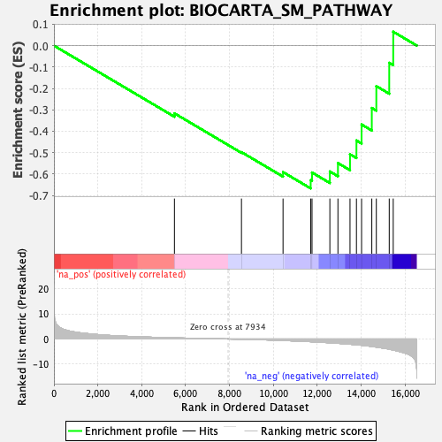
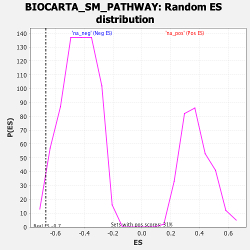

| | | Dataset | DE_genes2 |
| Phenotype | NoPhenotypeAvailable |
| Upregulated in class | na_neg |
| GeneSet | BIOCARTA_SM_PATHWAY |
| Enrichment Score (ES) | -0.6671806 |
| Normalized Enrichment Score (NES) | -1.5259662 |
| Nominal p-value | 0.02186589 |
| FDR q-value | 0.2347597 |
| FWER p-Value | 0.99 |
Table: GSEA Results Summary

Fig 1: Enrichment plot: BIOCARTA_SM_PATHWAY
Profile of the Running ES Score & Positions of GeneSet Members on the Rank Ordered List
| PROBE | GENE SYMBOL | GENE_TITLE | RANK IN GENE LIST | RANK METRIC SCORE | RUNNING ES | CORE ENRICHMENT | | 1 | SNRPD3 | | | 5490 | 0.451 | -0.3164 | No |
| 2 | SNRPC | | | 8544 | -0.101 | -0.4976 | No |
| 3 | SNRNP70 | | | 10438 | -0.599 | -0.5910 | No |
| 4 | SNRPB | | | 11698 | -1.085 | -0.6287 | Yes |
| 5 | SNRPD2 | | | 11758 | -1.113 | -0.5928 | Yes |
| 6 | SNRPG | | | 12571 | -1.519 | -0.5881 | Yes |
| 7 | SNRPA | | | 12939 | -1.737 | -0.5487 | Yes |
| 8 | SNRPF | | | 13489 | -2.094 | -0.5077 | Yes |
| 9 | SNRPE | | | 13782 | -2.313 | -0.4434 | Yes |
| 10 | SNRPA1 | | | 14016 | -2.506 | -0.3686 | Yes |
| 11 | SNRPD1 | | | 14482 | -2.970 | -0.2914 | Yes |
| 12 | SNRPB2 | | | 14688 | -3.231 | -0.1893 | Yes |
| 13 | SRSF2 | | | 15276 | -4.073 | -0.0804 | Yes |
| 14 | U2AF1 | | | 15458 | -4.407 | 0.0650 | Yes |
Table: GSEA details [plain text format]

Fig 2: BIOCARTA_SM_PATHWAY: Random ES distribution
Gene set null distribution of ES for BIOCARTA_SM_PATHWAY